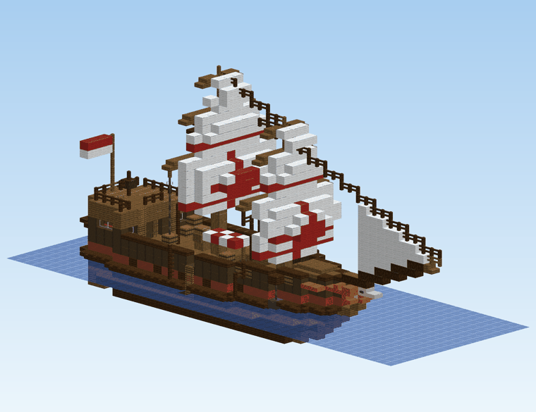
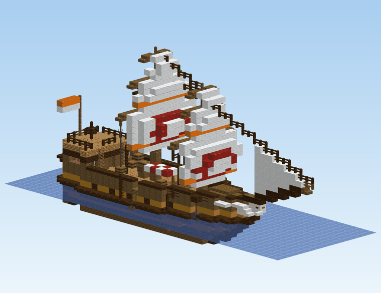
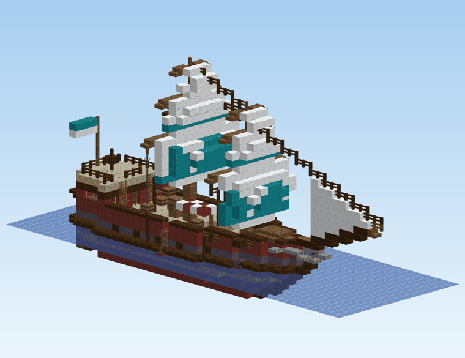
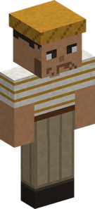
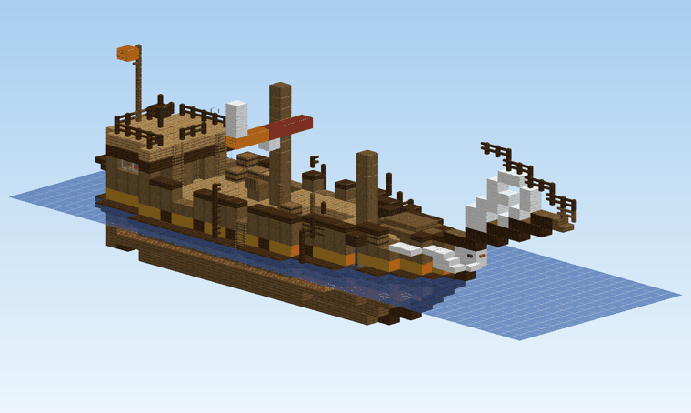

Events at sea¶
Now and then, the sea comes to you. Three events turn up near a player, stay for a while and go:
| Event | How often | How long | What it brings |
|---|---|---|---|
| The merchant ship | every 4 to 7 days | 1 day | the best of every stall, big orders, a crew guarding its cargo |
| A Sea King surfaces | every 7 to 10 days | 2 days | a Sea King to fight, without a rod |
| A wreck adrift | every 5 to 8 days | 1 day, then it sinks | salvage; one wreck in four is guarded by a Sea King |
Days are in-game days (one day = 20 real minutes), and the wait between two events of a kind is drawn anew each time. Each event can be turned off, or made to come more or less often, in the configuration.
How you hear of them¶
- In the chat. Everyone is told when an event starts, with its coordinates, and again when it is about to end.
- From the barkeepers. Mine Mine no Mi's barkeepers sell rumours (1 000 Belly). While an event runs within 2 000 blocks of the barkeeper, the rumour is about it: the nearest one. Every player hears it, Marine, Bounty Hunter or not.
Where they turn up¶
Always at sea, between 100 and 500 blocks from a player, on open water deep enough to float a ship. Never on frozen seas, and never on top of a player: the spot is kept clear of anyone within 16 blocks. By order of preference:
- off a village, when one of the two nearest villages has sea close by;
- off the coast, with land within 24 blocks;
- out at sea, anywhere else.
The chat says which. An event is placed once a player gets near enough for its water to be loaded; until then, only its coordinates exist.
The merchant ship¶

A three-masted merchant ship drops anchor for one day. Row out and climb one of the rope ladders down its sides.
A merchant ship of the Crimson Compass Guild has dropped anchor off the coast, near 1200, -340. It sails again tomorrow.
An hour before it goes, everyone is told it "weighs anchor within the hour". When it sails, it takes everything aboard with it, whatever is left in its chests included, and the sea closes over where it lay.
The five houses¶
Every ship belongs to one of five merchant houses, drawn at random. Each has its own ship: its woods, the colour of its hull band, the mark on its main sail and its figurehead. Its crew is dressed in its colour.
| House | Woods | Colour | Mark | Figurehead |
|---|---|---|---|---|
| Sunward Company | spruce | ochre | Cruise's life ring | a gull |
| Verdant Isles Company | oak and birch | green | a leaf | a sea turtle |
| Crimson Compass Guild | dark oak | red | a compass star | a lion |
| Lagoon Traders | mangrove | teal | a fish | a dolphin |
| Amethyst Pearl House | cherry | purple | a crescent and its pearl | a swan |
The house is named in the chat, in the rumours and over its merchant's head. What the merchant sells does not depend on it.


The Ship Merchant¶

On deck, under the stall's awning, stands the Ship Merchant of the <house>, spyglass in hand. He trades like the travelling merchants, with more of everything:
- His stall: the best of every stall. He draws from the Fishmonger's, the Hunting Merchant's, the Prospector's and the Materials Trader's goods, and the Travelling Cook's simple dishes, but only from the upper part of each list: the rarer goods. Each of those is on his stall 30 % of the time, however rare, 1 to 3 of it, up to 24 goods. Prices are the usual ones.
-
Maps and score recipes, more often than ashore:
On his stall Ship Merchant A travelling merchant Torn map (Rumor) 80 % 35 % Torn map (Old) 40 % 12 % Torn map (Legendary) 12 % 3 % A lost tune's score recipe 35 % 8 % -
He buys everything any of Cruise's merchants buys, at the best of their prices, and his purse is deep: 50 000 to 300 000 Belly.
- Big orders. He posts three contracts, each from a different trade, for one of the trade's better goods: 3 to 5 of it, or 5 to 8 for the last one, which only a Merchant can take. They pay 1.8 times the goods' worth (more for a Merchant), and every one comes with something extra: a score recipe now and then, otherwise a torn map (an Old one on the Merchant's order).
The crew¶
A Boatswain keeps the quarterdeck by the helm, and three or four Deckhands watch the hold and the stall. They are armed with cutlasses and leave you alone while you trade and look around.
Take anything from one of the ship's chests or barrels, or break one, and you are a thief: "The crew saw you steal from the ship!" Every sailor aboard comes for you at once, and knows where you are without seeing you. They never calm down until the ship sails, and the Ship Merchant won't deal with you any more ("I don't deal with thieves."). Opening a chest to look, or putting something in, is not theft. Jump overboard and they stay aboard; come back, and they are waiting.
Hitting a sailor without stealing only makes that sailor and the ones nearby fight back.
| Deckhand | Boatswain | |
|---|---|---|
| Doriki | 3 700 to 4 900 | 4 300 to 5 700 |
| Health | about 90 to 120 | about 110 to 140 |
| Busoshoku / Kenbunshoku | 35-44 / 26-34 | 57-65 / 55-65 |
| Fights with | haki hardening, future sight, a tackle | the same, plus imbued blows and a Punch Rush |
As with Mine Mine no Mi's own fighters, defeating one gives you 1 % of its Doriki.
The cargo¶
Every chest and barrel aboard holds a little of the merchants' goods:
- 1 or 2 goods of the fish, hunting, mining or materials trades, mostly common ones; never a dish;
- a pouch of Belly 25 % of the time (200 to 1 500 Belly);
- a torn map (Rumor) 10 % of the time.
Somewhere in the hold, one chest holds a little more: an extra good, an Old torn map 25 % of the time, and sometimes a Devil Fruit box:
| Box | Chance |
|---|---|
| Wooden Box | 4 % |
| Iron Box | 1.5 % |
| Golden Box | 0.5 % |
That is some 6 % in all. The fruit inside is drawn by Mine Mine no Mi when the box is opened, as for any box. Taking any of it, of course, sets the crew on you.
A Sea King surfaces¶
A Sea King is sighted off a coast and stays for two days, circling slowly over its patch of deep water, then sinks back to the deep.
A Sea King has been sighted off the coast, near 1200, -340. Keep out of its water!
| Sea King | Chance | Health | Damage | Fisher XP for the kill |
|---|---|---|---|---|
| Sea King | 50 % | 140 | 8 | 900 |
| Extra-Large Sea King | 35 % | 200 | 11 | 1 400 |
| Goldfish Sea King | 15 % | 260 | 14 | 2 000 |
It is the same beast a Fisher pulls up on a line, with the same attacks. It only goes for whoever is on its water: swimming or in a boat within 32 blocks of where it lies. The beach is safe.
Killed, it gives its parts only, as a hooked one does:
| Sea King | Scales | Fins | Head crest |
|---|---|---|---|
| Sea King | 4 to 8 | 1 to 2 | - |
| Extra-Large Sea King | 8 to 14 | 2 to 4 | 1, half the time |
| Goldfish Sea King | 12 to 20 | 3 to 6 | 1 to 2 |
When its two days are up, it dives and is gone, whether or not anyone fought it.
A wreck adrift¶

The wreck of a merchant house's ship drifts in, masts snapped, sails in rags, riding low with its hold flooded. It sinks a day later, with whatever is still aboard.
A wreck of the Sunward Company has been sighted adrift off the coast, near 1200, -340. It will sink by tomorrow.
Guarded wrecks¶
One wreck in four has a Sea King circling it (a Sea King or an Extra-Large one, never the Goldfish). For it, anyone aboard the wreck is on its water: it cannot reach the deck with its body, so it hits whoever stands there with its water jet, from up to 30 blocks. Swimmers get its whole set of attacks.
That wreck is worth the fight: its cargo is still aboard.
- Every chest and barrel holds 1 or 2 goods, a pouch of Belly 25 % of the time, a torn map (Rumor) 25 % of the time and an Old one 8 % of the time: the best odds for maps anywhere.
- Its hidden chest holds a Devil Fruit box twice as often as a merchant ship's: Wooden 8 %, Iron 3 %, Golden 1 %, some 12 % in all.
Wrecks nothing guards¶
They have been picked over. Half their chests and barrels are empty; the others hold a single good, a pouch of Belly 10 % of the time, a torn map 12 % (Rumor) or 3 % (Old) of the time. Never a Devil Fruit box.